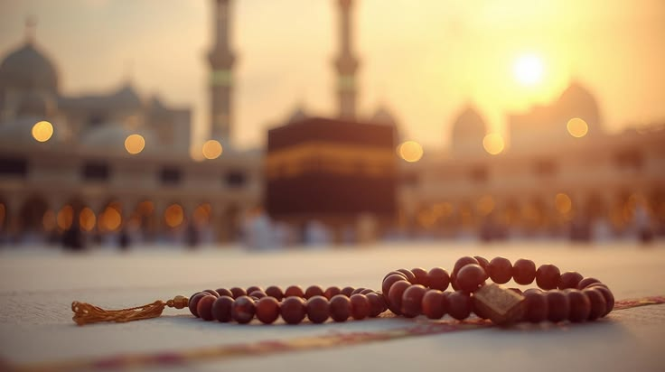

Fluturimi
Aegean Airlines · Tiranë – Athinë – Xhide, vajtje-ardhje.

UMRA TRAVEL · MEKË & MEDINË
Ne kujdesemi për organizimin, që ti t’i kushtohesh adhurimit.
Paketat e Umres
Shikoni datat, çmimet dhe përfshirjet. Konfirmoni disponueshmërinë me agjencinë.
Të gjitha paketat ↗Organizimi i udhëtimit
Përfshirjet ndryshojnë sipas paketës. Kontrolloni hollësitë e nisjes që keni zgjedhur.
Aegean Airlines · Tiranë – Athinë – Xhide, vajtje-ardhje.
Valixhe 23 kg dhe çantë shpine 8 kg.
Vizë 1-vjeçare për Arabinë Saudite, sipas paketës.
Hotele në Mekë dhe Medinë; mëngjes në paketat standarde.
Transferta lokale dhe treni ekspres Haramain Medinë–Mekë.
Vizita historike-fetare dhe shoqërim nga udhëheqësi i grupit.
Pajisje dhe ujë Zemzem të përfshira në paketat e publikuara.
Iftari dhe syfyri përfshihen në paketat përkatëse të Ramazanit.
Në paketat ku është njoftuar, 10 € nga pagesa e çdo umrexhiu shkojnë për sadaka.
Umra · Mekë
Ndoshta përgjigjja e lutjeve të tua fillon me një hap drejt Shtëpisë së Tij.
Qëllimi i udhëtimit
UMRA Travel ndihmon me përgatitjen praktike për udhëtimin drejt Mekës dhe Medinës: vizën, fluturimin, akomodimin, transportin dhe shoqërimin sipas paketës. Udhëtari niset me nijetin e adhurimit dhe përgatitet për ritet e Umres.
Informacion për Umren dhe Haxhin ↗
Paketë sipas kërkesës
Zgjidhni vetë datat e udhëtimit, aeroportin, hotelin, kohëzgjatjen e qëndrimit në Mekë dhe Medinë dhe shërbimet që ju përshtaten. Ne kujdesemi për organizimin e çdo detaji, që ju ta përjetoni këtë ibadet me qetësi dhe përkushtim.
Kërko informacion ↗Ramazan 2027
Dy nisje të publikuara për Ramazan, me çmime dhe konfigurime dhomash të ndryshme.
Para se të niseni
Nëse nuk e gjen përgjigjen që kërkon, na shkruaj. Ekipi ynë të ndihmon me informacion për paketën dhe përgatitjen.
Na bëj një pyetje ↗Përmbajtja varet nga paketa. Paketat e publikuara përfshijnë shërbime si vizë, akomodim, transport lokal, tren ekspres dhe udhëheqës grupi. Hollësitë shfaqen te secila paketë dhe konfirmohen nga agjencia.
Po. Umra e personalizuar u mundëson individëve dhe familjeve të kërkojnë data, aeroport, hotel dhe kohëzgjatje sipas preferencës.
Zgjidh paketën dhe plotëso formularin e shkurtër. Kërkesa përgatitet në WhatsApp; ajo dërgohet vetëm pasi ta hapësh dhe ta konfirmosh mesazhin.
Kërkesat mund të varen nga dokumentet dhe rregullat në fuqi. Na kontakto për udhëzimet e përditësuara për udhëtimin tënd.
Në paketat për të cilat është publikuar ky informacion, 10 € nga pagesa e çdo udhëtari shkojnë për sadaka. Konfirmoje këtë hollësi me ekipin gjatë rezervimit.
Na kontaktoni për datat dhe përfshirjet e paketave.